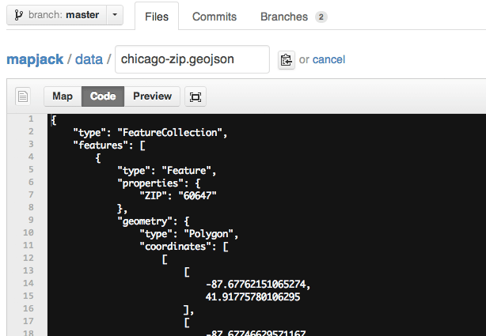

Mapjack hacks in a map editor next to GitHub's normal text editor when you are editing GeoJSON files.
Mapjack is distributed as a Greasemonkey-style user script. It should work with either Greasmonkey in Firefox or Tampermonkey in Chrome. Note that it won't work as a straight user script in Chromium because it depends on unsafeWindow (be warned!).
The script is hosted here: tschaub.net/mapjack/mapjack.user.js
Installation instructions depend on the extension you're using. Until you find more detail here, look to the extension docs for user script installation.
After installing you can view any .geojson file on GitHub, click the "Edit" button, and get a map editor (hot tip: you can find some sample GeoJSON files to experiment with in the mapjack repo).
The editing workflow is pretty bare bones right now. To modify an existing shape, just click and start dragging points around. Click a "ghost" vertex to add a new point. Click "d" while hovering over a vertext to delete. No support for adding new features or removing entire features right now. To finish editing, click back to the "Code" tab, enter your commit message, and commit!
Disclaimer: This is a late night hack. Use at your own risk.